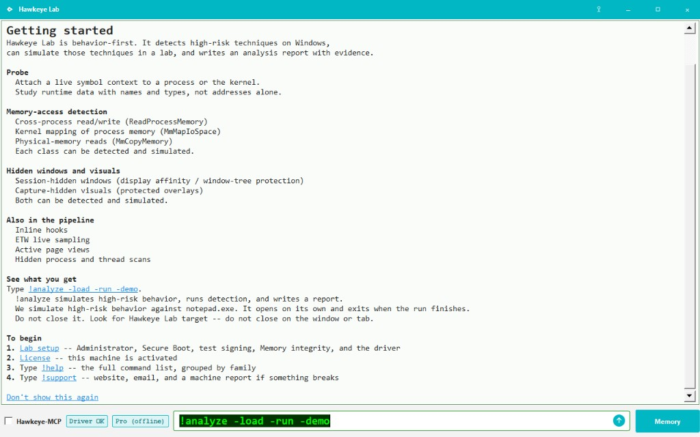
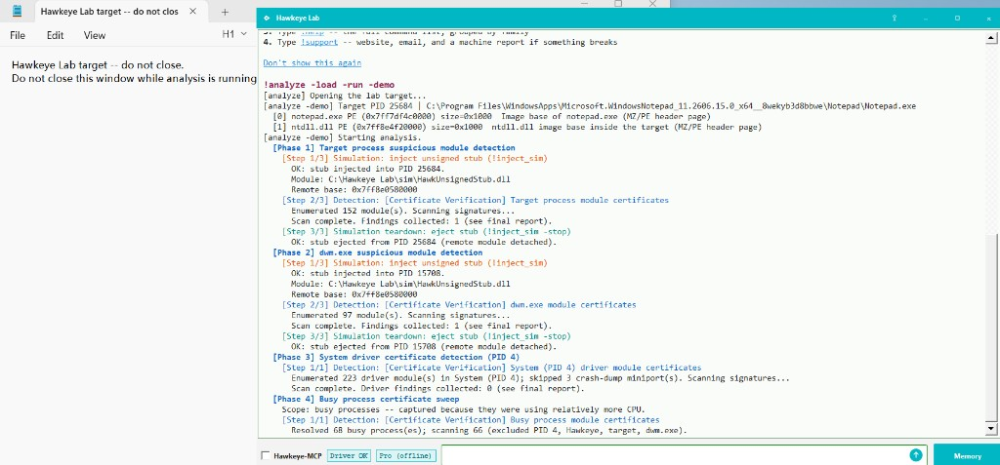
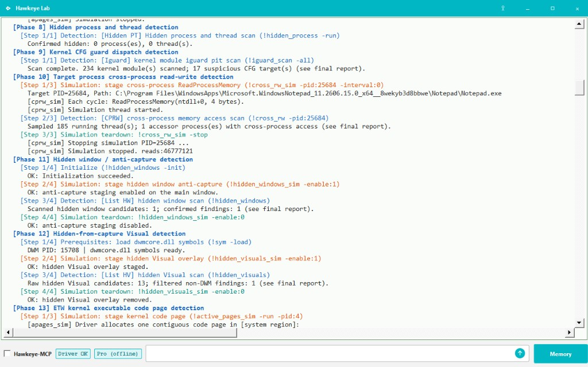
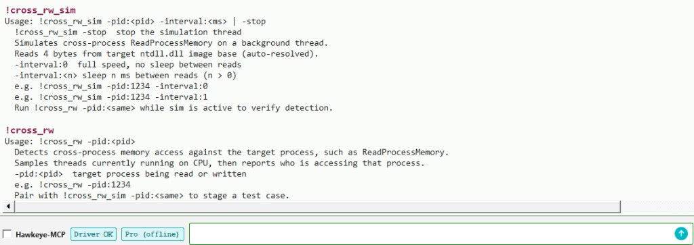
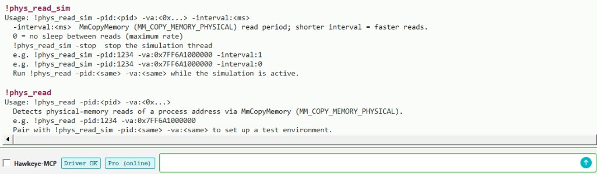
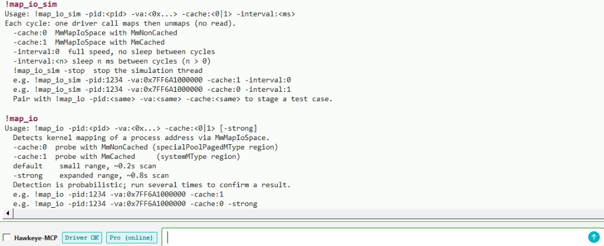
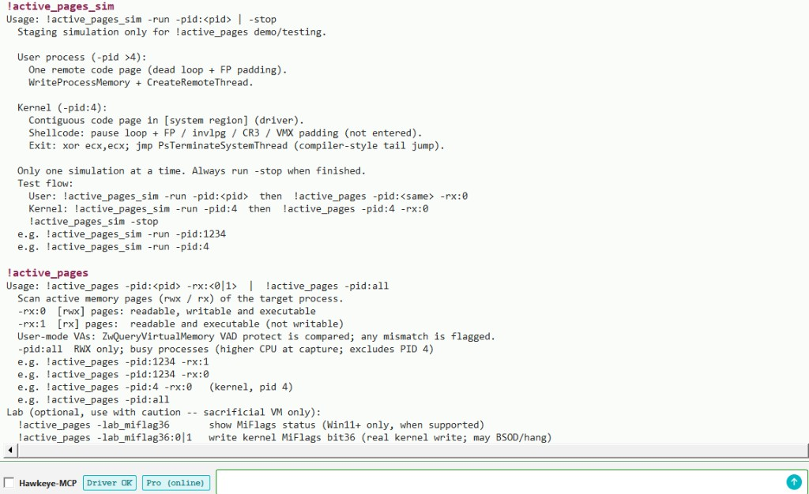
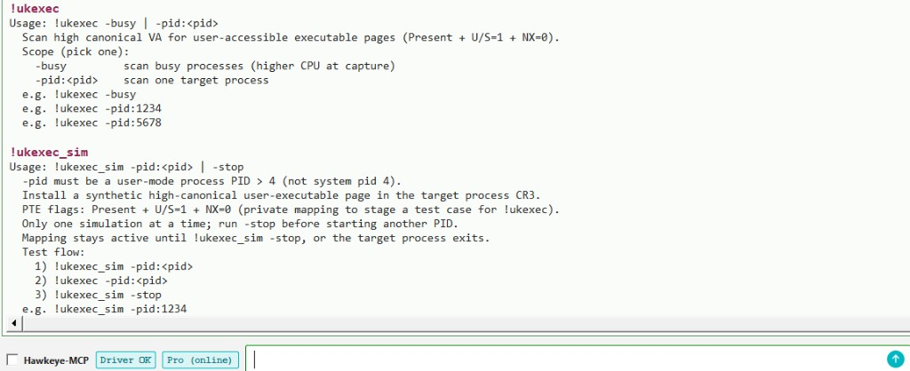
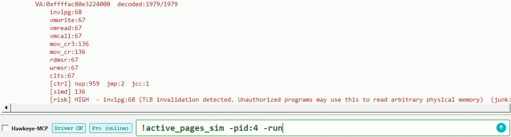
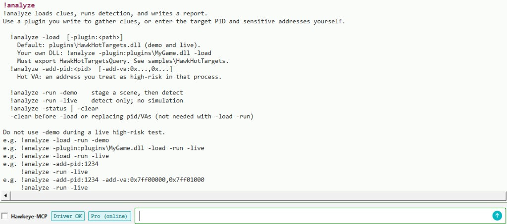

!probe
A live symbol context. Attach, then search names together.
Hawkeye Lab
Hawkeye Lab is a professional productivity tool built on a body of research. It automates high-risk behavior detection, produces an analysis report, and draws on a behavior-signature library so everything is easier.
The behavior-signature library is what shapes each analysis report: the detection dimensions Lab runs, and the Assessment text after each dimension — what the finding means and how to read it.
Host-native kernel driver — live detections without VT-based or VM-layer introspection.
$35 / month (paid subscriptions opening soon). Lab includes everything in Community.
We recommend
trying Community first
to confirm driver setup on your machine. The cards below are what Lab adds —
high-risk detection, !analyze, and scored reports on the Community bench.
| Capability | Community | Lab |
|---|---|---|
| Live console + driver setup | ✓ | ✓ |
!probe, !etw, memory tools |
✓ | ✓ |
| High-risk detection commands | — | ✓ |
!analyze (20-check workflow) |
— | ✓ |
| Scored analysis report (PDF / text) | — | ✓ |
Lab -demo staging |
— | ✓ |
Community: GPL-3.0-or-later · Lab: subscription ($35 / month).
!probeA live symbol context. Attach, then search names together.
!etwWhere the CPU ran in a short window. Process, thread, or the whole system.
!cross_rwIn a short window, samples system-wide threads for cross-process read or write against a target. A game, or any process you are looking at. !cross_rw_sim stages a case.
!phys_readDetects physical-memory reads via MmCopyMemory (MM_COPY_MEMORY_PHYSICAL). !phys_read_sim stages a case.
!map_ioDetects kernel mapping of a process address via MmMapIoSpace — MmNonCached and MmCached. !map_io_sim stages both modes.
!active_pagesIn a short window, records active pages in the target process virtual address space — RWX or RX. User-mode or kernel. !active_pages_sim stages both.
!hidden_windowsDetects windows hidden on the DisplayAffinity path — SetWindowDisplayAffinity or win32kfull!ChangeWindowTreeProtection. !hidden_windows_sim hides Hawkeye's own main window.
!hidden_visualsDetects Visuals hidden from capture — in-process or cross-process, and bindable to another process's window. !hidden_visuals_sim stages a local Visual.
!ukexecDetects executable pages in the kernel region of a process address space that remain user-accessible — a newer injection technique. !ukexec_sim stages a case.
!hidden_processDetects processes and threads that are running but missing from the lists the system reports. !hidden_process -run.
!analyzeUse a plugin you write to gather clues automatically, or enter the target PID and sensitive addresses yourself. Hawkeye takes those clues, runs detection, and writes a report.
Built on !active_pages: automatic instruction recognition on active memory.
Covers INVLPG, special instructions, virtualization-related opcodes, and the like.
Detection and !analyze walkthroughs are on this page.
Lab includes every Community command too — see the Community tab
for !probe, !etw, Memory, and driver setup.
Run !help for the full catalog; run any command with no
arguments for usage.
!analyze does not guess the target. It needs clues:
which process, and which addresses in that process you treat as
high-risk.
Lab ships HawkHotTargets.dll (under
plugins\). The built-in plugin stages a detection
target: it opens Notepad titled
Hawkeye Lab target -- do not close,
then hands Hawkeye that PID and two fixed addresses —
the PE header of notepad.exe, and the PE header of
ntdll.dll in that process.
You can replace it with your own plugin. The sample is
samples\HawkHotTargets
in the Community repo.
A game security engineer, for example, writes the code that
tells Hawkeye the game process PID and the sensitive addresses
in that process's memory. Hawkeye takes those clues and runs
automated detection for suspicious behavior.
Community is the research console. Lab is the same foundation, already set up as a working case. The plugin in step 1 supplies the clues. One built-in run simulates the behavior, detects it, and writes an analysis report — that is how a newcomer first sees what Lab can do.
Before you run this on your machine, follow
Community Driver setup
and make sure the status bar reads Driver OK.
Type !analyze -load -run -demo.
The demo uses Notepad as the target. Lab stages high-risk behavior
against it — a cross-process read, a planted page, and the rest of
that run — a close simulation of a live system.



When that run finishes, Lab writes a PDF. ANALYSIS comes first; DETECTION is the evidence appendix. The cover is marked DEMO or LIVE.
This sample is from the Notepad run above. Lab staged the scene — not a live incident.
From a -live run — detection only, no simulation. Same layout; cover marked LIVE.
On your machine the file is saved under reports\.
Lab uses the same host environment as Community: test signing,
an Administrator console, and a loaded driver.
See Community Driver setup
and confirm Driver OK on the status bar before
any Lab detection or !analyze run.
Those steps are documented once — on the Community page. When the driver is loaded, start the Lab edition.
!probe — the entry
Lab ships the same bench as Community. Symbol context starts with
!probe — attach to a process or the kernel, then
search many names together.
The illustrated walkthrough is on the Community page:
step 2 — !probe.
!etw — who actually ran
!etw samples which instruction pointers ran in a short
window — process, thread, or the whole system. Lab pairs it with
active-page and instruction-decode work (step 14).
See the Community walkthrough:
step 3 — !etw.
!cross_rw — who else is reading this process
!cross_rw watches a target PID for cross-process access
— ReadProcessMemory and the like. The window is
short. The scan is threads currently on the CPU, across the system;
then it reports who was in that process.
That is a bench question, not a verdict. It shows up around a game process, a build you are testing, or any software you run: is something else reading it.
!cross_rw_sim stages that access on a background thread
so you can see the detector fire. Run either command with no
arguments for usage. Pair them on the same PID;
!cross_rw_sim -stop ends the sim.

!phys_read — physical-memory reads
Cross-process access is not one technique.
!cross_rw covers attach-based reads such as
ReadProcessMemory.
!phys_read covers another:
MmCopyMemory with MM_COPY_MEMORY_PHYSICAL
— a physical-memory read of a process address.
-pid is the process being read.
-va is the virtual address inside it.
Both sides of the pair take the same two flags.
!phys_read_sim stages the same
MmCopyMemory (MM_COPY_MEMORY_PHYSICAL)
read so you can see the detector fire. Run either command with
no arguments for usage. Pair them on the same PID and VA.

-pid and -va on both commands.!map_io — MmMapIoSpace mapping
Physical-memory access is not one technique either.
!phys_read covers MmCopyMemory
(MM_COPY_MEMORY_PHYSICAL).
!map_io covers another:
a kernel map of a process address through
MmMapIoSpace.
Two cache modes. -cache:0 is
MmNonCached. -cache:1 is
MmCached.
-pid is the process being mapped.
-va is the virtual address inside it.
Both sides of the pair take the same three flags.
Detection is probabilistic; default is a short scan,
-strong widens it. Run more than once to confirm.
!map_io_sim stages each mode: map, then unmap,
no read. Run either command with no arguments for usage.
Pair them on the same PID, VA, and cache.

-pid, -va, and -cache on both commands.!active_pages — active pages in the target process virtual address space
Finding the code body of malware, or of software that should not
be there, is slow if you walk the address space by hand.
!active_pages samples a very short window and
records the pages that were active in that process virtual
address space.
-pid is the target. -pid:4 is the
kernel. -rx:0 is RWX pages.
-rx:1 is RX pages.
-pid:all walks busy processes for RWX (not PID 4);
capture costs more CPU. User-mode hits can be checked against
VAD protection.
!active_pages_sim stages an active page in
user-mode (-pid above 4) or in the kernel
(-pid:4). One sim at a time;
-stop when you are done. Pair the detector on the
same PID with -rx:. Run either command with no
arguments for usage.
-lab_miflag36 is experimental: Windows 11
MiFlags research. It is not part of the detector.

-rx:.!ukexec — user-accessible pages in the kernel region
Classic injection sits in user-mode mappings. A newer technique
places executable code in the kernel region of the target
process's address space, still reachable from user mode.
Ordinary user-mode injection checks do not cover that region.
!ukexec scans for those pages.
-pid scans one process.
-busy scans busy processes (higher CPU at capture).
Use one of these, not both.
!ukexec_sim plants one user-accessible page in that
kernel region for a user-mode PID (not PID 4). One sim at a
time; -stop when you are done, or when the process
exits. Run either command with no arguments for usage.

-busy or -pid; sim takes a user-mode PID.
Much modern malware reaches another process's memory through
PTE remap paired with INVLPG, not only through
familiar cross-process APIs. That makes instruction recognition
on the pages that actually ran more important, not less.
Hawkeye decodes active memory and ETW RIP samples into an
instruction report: counts for invlpg,
virtualization opcodes, control-register moves, MSRs, and
related classes, with a risk line when a pattern stands out.
Pair it with !active_pages to find hot pages and
with !etw to see where the CPU
ran in a short window.
Together they narrow a large address space down to a few
high-risk code pages quickly.
Lab can stage a kernel page full of synthetic high-risk
instructions. Run !active_pages_sim -run -pid:4,
then detect with !active_pages -pid:4 -rx:0.
Open the page in the Memory viewer — see
Community Memory for
ReadMemory and the console stats line.
Lab also lets you edit bytes at a chosen VA in that viewer
(hex edit after read) when you need to patch test data by hand.

[risk] HIGH on invlpg.!analyze — automated detection and report
!analyze runs automated detection and writes an analysis
report from clues you supply. You must provide those clues first.
Write a plugin per the contract, or set the target PID and sensitive
addresses yourself.
The built-in example uses Notepad and fixed addresses inside that process as the target and clues, then runs simulation and detection. That walkthrough shows what Hawkeye can do and where its limits are — not a live incident.
In -demo mode, Hawkeye actively stages sensitive
behavior, then detects it.
In -live mode it does not simulate anything; it
detects only on the clues you gave. That is the setup for real work.
Each dimension in the PDF comes from the behavior-signature library
— the check itself plus the Assessment that explains the finding.
Default plugin: plugins\HawkHotTargets.dll (demo and live).
Your own DLL: !analyze -plugin:plugins\MyGame.dll -load.
Must export HawkHotTargetsQuery.
See
samples\HawkHotTargets.
Run !analyze with no arguments in the console for full usage.

!analyze with no arguments.